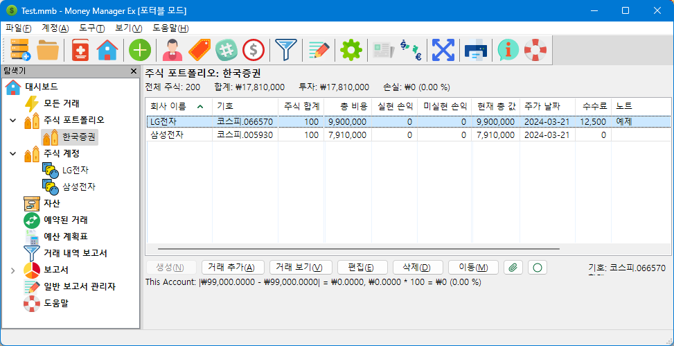
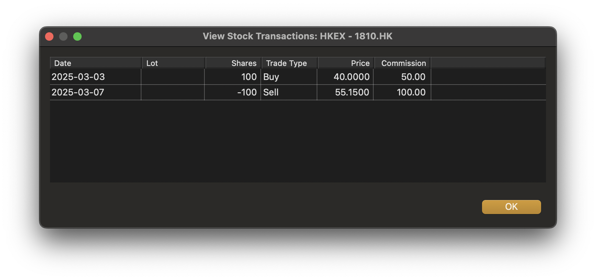

‘Stocks’와 ‘Shares’라는 용어는 종종 같은 의미로 사용되지만, 이 문맥에서는 구분하여 사용합니다. 여기서 Stocks(주식)는 회사를 의미하고, Shares(지분)는 회사 내의 가치 단위입니다. 일반적으로 주식 중개인을 통해 주식을 확보하고 회사의 지분을 사고팔게 됩니다.
주식과 주식 단위를 설정하는 과정은 두 단계로 이루어집니다.
이후 모든 주식 단위 거래는 주식 포트폴리오 보기에서 회사별로 기록됩니다.
현금 계정과 관련된 모든 거래는 투자 계정의 현금 원장(거래 장부)을 통해 처리됩니다.
MMEX에서 주식과 주식 단위를 사용하려면 투자 유형의 계정을 생성해야 합니다.
이 계정의 이름은 일반적으로 주식 거래소나 증권 중개인의 이름이 됩니다.
예를 들어, 여기서는 주식 거래소 이름으로 HKEX
를 선택했습니다.
이 계정은 내비게이터에서 주식 포트폴리오라는 제목 아래에 표시됩니다. 내비게이터에서 주식 포트폴리오 항목을 확장하면 새로 만든 주식 포트폴리오(투자) 계정을 볼 수 있습니다.
새로 만든 HKEX
계정을 선택하면 주식 포트폴리오 화면이 열립니다.
여기서 ‘주식’은 우리가 매수한 회사들을 의미합니다.
예를 들어, 주식 거래소 KRX
에서 두 개 회사의 주식을 매수한다고 가정하면,
주식 포트폴리오 화면에 각 회사별 새 항목을 만듭니다.
각 회사의 초기 입력값으로 다음 항목들을 제공합니다:
KRX는 주식 거래소 코드이며,
005930는 현재 주가 정보를 얻을 수 있는 거래소를 나타냅니다.
이후 매입 시마다 새로운 LOT을 추가하는 것이 권장됩니다. 주식 매수 또는 매도는 주식 포트폴리오 보기에서 해당 주식을 선택하여 거래를 조정하면 됩니다.
주식 매도는 주식 포트폴리오 보기에서 해당 주식을 선택하여 거래를 조정하면 됩니다.
주식 포트폴리오 계정은 현재 보유 중인 주식의 요약 정보를 보여줍니다.
삼성전자와 LG전자 주식은 한국 거래소를 통해 추적됩니다. 이 보기에서는 의미가 없어지는 여러 항목 제목을 숨겼습니다.
참고: 초기 주식 가격은 이 보기에서 표시되지 않습니다. 이는 요약 보기에서는 각 매입마다 주식 가격이 다르기 때문에 의미가 없기 때문입니다.
주식을 계정에 추가하면 거래 내역 보기에서 관련 거래 기록을 확인할 수 있습니다.
투자 계정에 접속하여 일반 거래로 배당금을 추가할 수 있습니다.